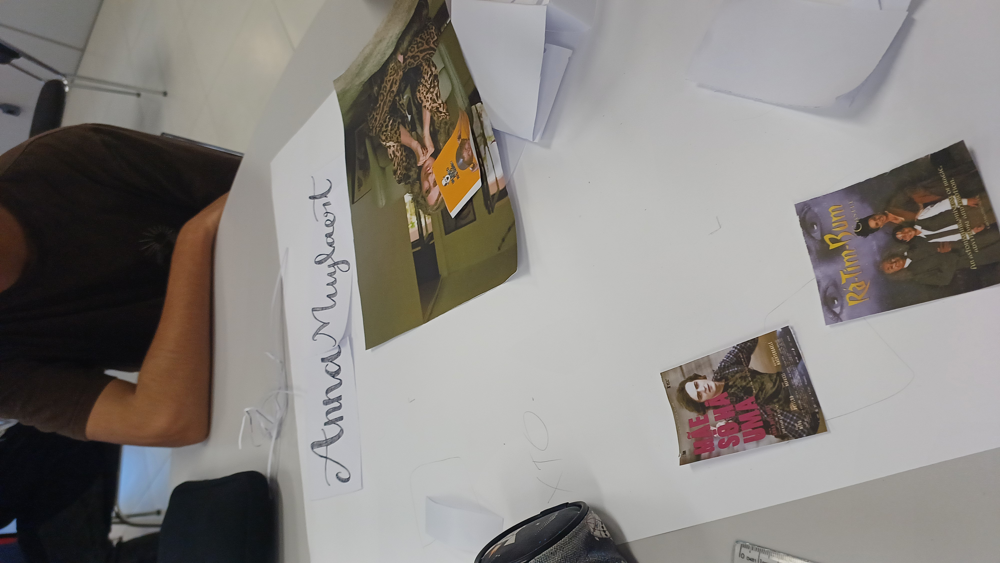

Anna Muylaert
Contextualização
Primeiramente os(as) estudantes tiveram uma aula expositiva dialogada sobre a cultura de arte urbana e suas diferentes manifestações através da dança, moda, música, batalhas, slam, skate entre outras. Abordamos a questão dessa cultura ter sido originada na periferia dos Estados Unidos e que por ser um discurso de empoderamento de juventudes marginalizadas, ela disseminou-se em diferentes lugares do mundo assumindo especificidades próprias. Conhecemos artistas importantes do grafite no exterior e no Brasil, como o artista Eduardo Kobra.
Processo
Foram elaborados três diferentes painéis. No primeiro direcionei mais os alunos para que deixassem um registro de nossas aulas. Nossa primeira atividade do semestre consistiu em realizar um desenho de uma obra modernista brasileira inserindo elementos da contemporaneidade. Escolhi a obra do aluno Léo da turma Info 23 por retratar objetos que identificam os próprios adolescentes do câmpus como os tênis, o mouse e os fones de ouvido:
Produção


